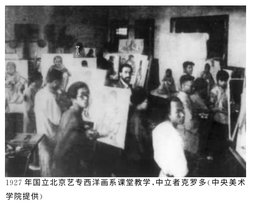
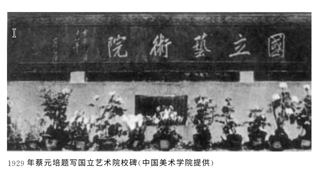

蔡元培与美术教育
蔡元培在留学期间，康德“美的超越性与普遍性”的理念对他产生了深远影响。
1916年辞去教育总长职务
1917年：做“美育代宗教说”演讲
他认为美术在变革社会中具有重要的作用。
向北洋政府建议开办美术学校
担任北大校长期间发起成立北大画法研究会
蔡元培极力支持林凤眠执掌国立北京艺术学校
从北京美术学校到国立北平艺术专科学校
五四新文化运动的“美育”思潮推动了美术教育的发展，使得美术教育脱离了实业教育的阶段。
1918年：国立北京美术学校成立，郑锦任校长
1921年：改称北京美术专门学校
1925年：增设音乐、戏剧二系，改称北京艺术专门学校
1927年：奉系时期改称为京师大学美术专门部
林凤眠聘请齐白石任教
1934年：教育部令恢复国立北平艺术专科学校
1937年：全面抗战爆发，学校南迁

在林风眠的组织下，1927年5月1日，北京艺专师生联合社会的进步艺术社团组织了艺术大会，美术系举办美术展览，共展览了2000余幅作品，这些作品多抨击社会、讽刺现实。
事后，林风眠发表《致全国艺术界书》，指出没有国内真正创造的艺术品（模特儿事件），后林风眠被迫辞职。
国立杭州艺术专科学校 与林风眠的美术教育活动
1927年，国民政府定都南京，为改变当时国内艺术教育萎靡不振的情况下，蔡元培倡议设立国民艺术教育委员会，同年，在委员会议上通过“筹建国立艺术大学”提案。由林风眠、林文铮、王代之负责建校。
1929年：国立艺术院举行开学典礼。

1929年秋，学校改名为国立杭州艺术专科学校